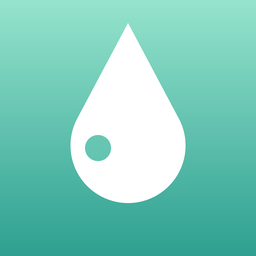

プライバシーポリシー
制定日:2026年10月4日
iPhoneアプリ「はだマッチ」(以下「本アプリ」)における利用者の情報の取り扱いについて定めます。
写真の取り扱い
肌の確認のために、前面カメラで撮影した写真を使います。写真はお使いのiPhoneの中だけで処理し、保存も送信もしません。開発者や第三者のサーバーへ写真を送ることはありません。アカウント登録もありません。
端末に保存する情報
次の内容は、お使いのiPhoneの中だけに保存されます。
- 確認した結果の数値(赤み・明るさ・キメの指標)と日付(写真そのものは含みません)
- 選んだ肌の悩みなどの設定
- 「マイルーティン」に登録した商品と使い始めた日
これらはiPhone本体のバックアップ(iCloudバックアップなど、利用者ご自身の設定によるもの)に含まれることがあります。記録は、アプリ内でいつでも削除できます。本アプリを削除すると、端末内のデータも削除されます。
必要な許可
本アプリは、肌の確認のために「カメラ」の許可を求めます。許可は、iPhoneの設定アプリからいつでも変更できます。
通知
「マイルーティン」に登録すると、使い切りの目安の約1週間前に、お知らせ(ローカル通知)を出します。通知はお使いのiPhoneの中だけで予約・表示され、サーバーは使いません。通知の許可は、iPhoneの設定アプリからいつでも変更できます。
シェア機能
シェア用の画像は端末内で作られ、写真は含まれません。画像は、利用者がシェアの操作をして送り先を選んだときだけ、その送り先(SNSやメッセージアプリなど)に渡ります。送り先での取り扱いは、各サービスの規約に従います。
商品リンクとアフィリエイト
本アプリは、商品の購入ページへのリンクを表示します。リンク先は Amazon.co.jp・楽天市場・Qoo10で、アフィリエイトリンクを含みます。リンクを開いて購入された場合、開発者が紹介料を受け取ることがあります。商品の並び順は成分の合い具合だけで決めており、紹介料の有無や金額では決めていません。リンクを開くと、各社のサイトに移動します。そこでの情報の取り扱いは、各社の規約に従います。Amazonのアソシエイトとして、当アプリは適格販売により収入を得ています。
医療に関する注意
本アプリは、美容目的のセルフチェックです。医療機器ではなく、病気の診断・治療を目的としていません。肌の不調が続く場合は、皮膚科などの医師にご相談ください。
広告・解析
本アプリには、広告の表示や、利用状況の解析のための仕組みは入っていません。
提供地域
本アプリは、欧州経済領域(EU)では提供していません。
このポリシーの変更
内容を変更する場合は、このページを更新してお知らせします。
お問い合わせ
サポートページをご覧ください。